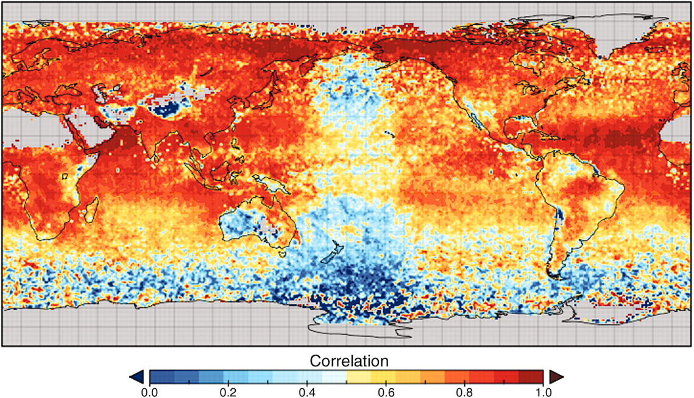

building tools, building community

1/29/2015
building tools, building community
credit: NASA

credit: NSF

credit: Hopkin (2006) doi: 10.1038/444420a

credit: Witze (2013) doi: 10.1038/501480a

credit: NERSC

credit: Scambos & Bauer, NSIDC

Overpeck+ (2011) doi: 10.1126/science.1197869

Baraniuk (2011) doi: 10.1126/science.1197448

adapted from Reichman+ (2011) doi: 10.1126/science.1197962
today the visualization and analysis component has become a bottleneck
Fox & Hendler (2011) doi: 10.1126/science.1197654

Fox & Hendler (2011) doi: 10.1126/science.1197654

credit: Arthus-Bertrand
credit: Arthus-Bertrand

IPCC records and model projections at your fingertips
library("rWBclimate")
country.list <- c("USA", "CAN")
country.dat <- get_historical_temp(country.list, "year")
plot <- ggplot(country.dat, aes(x = year, y = data, group = locator)) +
geom_point() + geom_path() + xlab("Year") +
ylab("Average annual temperature") +
stat_smooth(se = F, colour = "black") +
facet_wrap(~locator, scale = "free") + theme_bw()
IPCC records and model projections at your fingertips

library("rgbif")

Jones+ (2006) doi: 10.1146/annurev.ecolsys.37.091305.110031
effective interdisciplinary communication of data limitations with regard to, for example,
Overpeck+ (2011) doi: 10.1126/science.1197869


Evans+ doi: 10.1126/science.1201765

Mitchner (2012) doi: 10.1016/j.tree.2011.11.016
Although research scientists have been the main users of these data, an increasing number of resource managers (working in fields such as water, public lands, health, and marine resources) need and are seeking access to climate data to inform their decisions, just as a growing range of policy-makers rely on climate data to develop climate change strategies

Synthesizes over 140 data sets.

How easy would it be to update this to reflect new data?
adapted from Reichman+ (2011) doi: 10.1126/science.1197962

Reichman+ (2011) doi: 10.1126/science.1197962

Peng (2011) doi: 10.1126/science.1213847